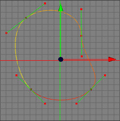

Break Segment Tool
You often have to separate a spline curve into two separate splines. To do this you have to use the break segment tool. See the images below where one Beziere spline is broken up into two separate splines.
 
See the colors of the second spline. You can easily see that the second image consists of two splines
due to the colouring of the spline after the Break Segment Tool has been used.
Attention: You can only perform one break at once.
Modes
The break segment tool is available in all modes. Note that it makes most sense to use it in point mode since you can only see the control points and its selections in point mode. This spline tool only works on raw spline objects.


To use the break segment tool, you first have to choose the control point where the break should happen. Now apply the menu command "ToolsSplineBreak Segment". The old spline is now broken up into two splines. Please note that you can only perform one break at once.
Keys
- none
Properties
- none